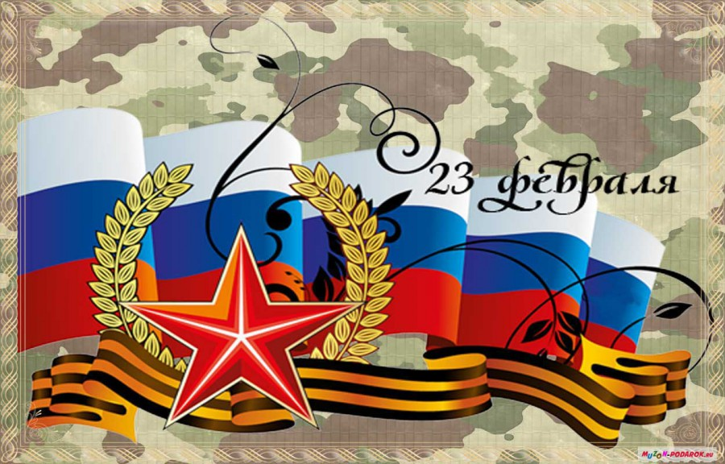

Здравствуйте, Уважаемые гости! Мы рады приветствовать Вас нанашей web-сранице посвященная знаментальному Дню!
23 февраля - День защитника Отечества!
На данном сайте, Вы узнаете историю праздника, традиции и много другое!

Содержание web-сраницы
- Праздник: 23 февраля – День защитника Отечества.
- История праздника. Как появился День защитника Отечества?
- Важность 23 февраля.
- Почему День защитника Отечества празднуют 23 февраля? Версии происхождения
- Вам понравится!
Праздник: 23 февраля – День защитника Отечества.